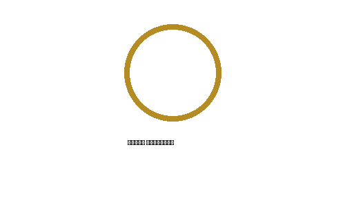
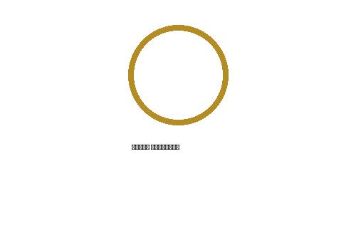

✦ بلاد الرافدين • Mesopotamiaالعراق
العراق
حكاية حضارة لا تنتهي
استكشف العراق على خريطة حقيقية تفاعلية، وانتقل بين المحافظات والمطارات والآثار والمزارات والمواقع السياحية.
استكشف الخريطة الطقس مباشر
19محافظة
6,000+سنة حضارة
IQDالدينار العراقي
✦تراث عالمي
خريطة حقيقية تفاعلية
اكتشف العراق من الأعلى
بدّل إلى صور الأقمار الصناعية، ثم اختر المحافظة أو نوع المكان. اضغط أي علامة لعرض التفاصيل والصور.
صور وحكايات
السياحة والتراث والآثار
اضغط على أي موقع لفتح موقعه على الخريطة ومشاهدة معرض صور تعريفي.
الاقتصاد والعملة
الدينار العراقي IQD
د.ع
العملة الرسمية
الدينار العراقي
رمز العملة: IQD • البنك المركزي العراقي
🇺🇸 1 USD1,310 IQD
🇪🇺 1 EURسعر مرجعي
🇸🇪 1 SEKسعر مرجعي
يمكن تحديث أسعار العملات من مصدر مباشر لاحقاً.شخصيات صنعت التاريخ
علماء وملوك ورؤساء العراق
بوابات رسمية
روابط عراقية مهمة
وصول سريع إلى مواقع وخدمات حكومية رسمية.

وزارة الداخلية العراقية
الخدمات والأخبار الرسمية لوزارة الداخلية
زيارة الموقع ←
وزارة الخارجية العراقية
الشؤون الدبلوماسية والقنصلية العراقية
زيارة الموقع ←وزارة التربية العراقية
منصة الخدمات الإلكترونية لوزارة التربية
زيارة المنصة ←الفيزا الإلكترونية العراقية
التقديم الرسمي للحصول على التأشيرة العراقية
قدّم على الفيزا ←